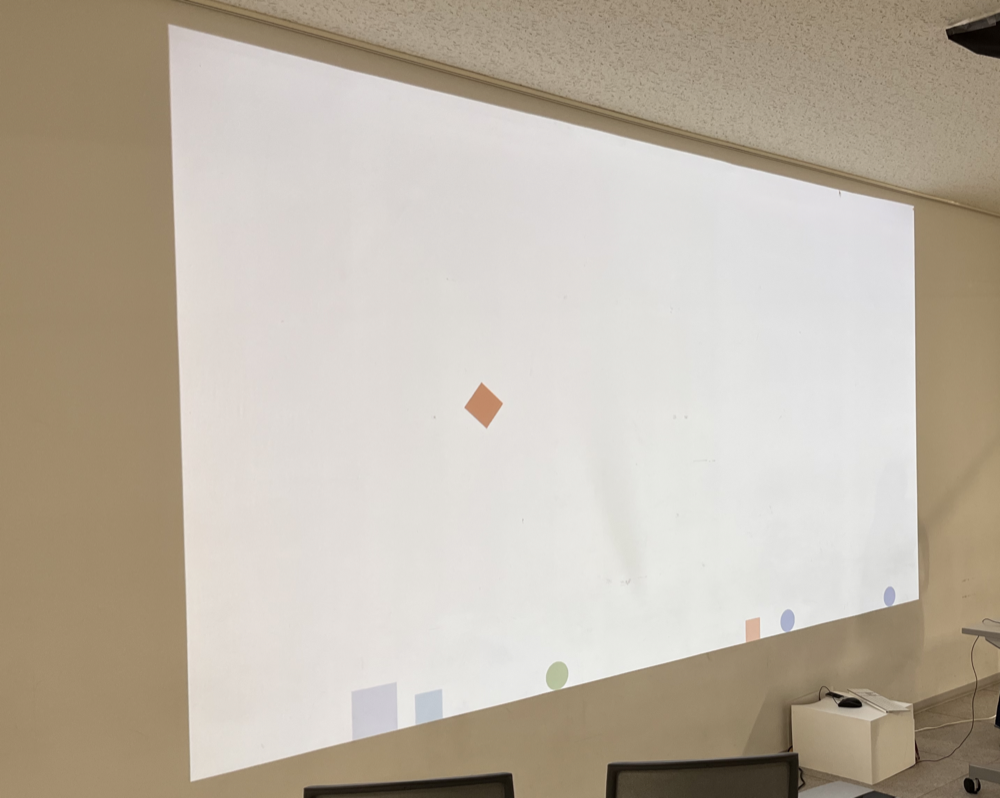
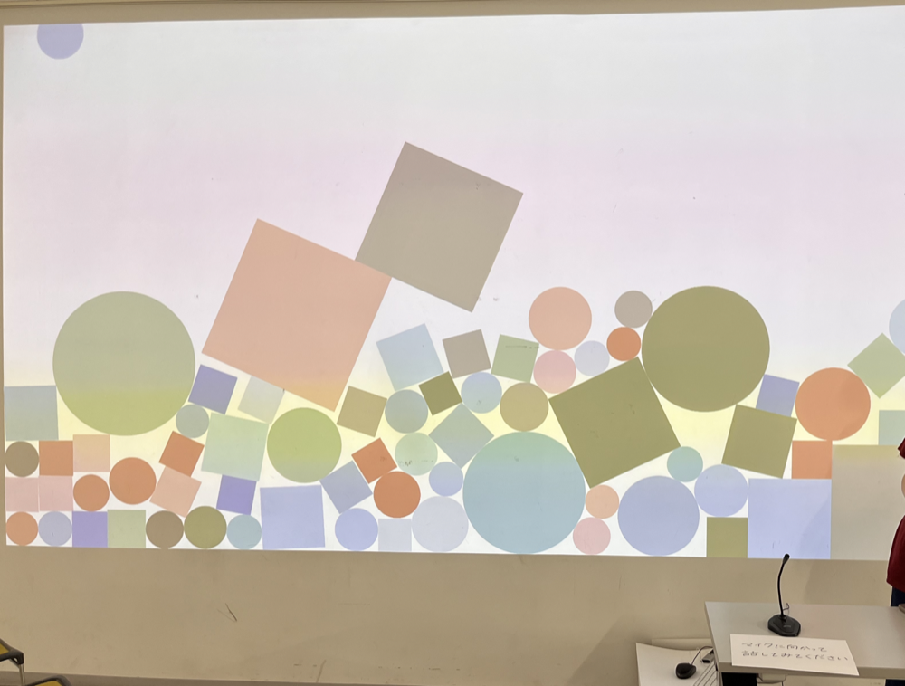
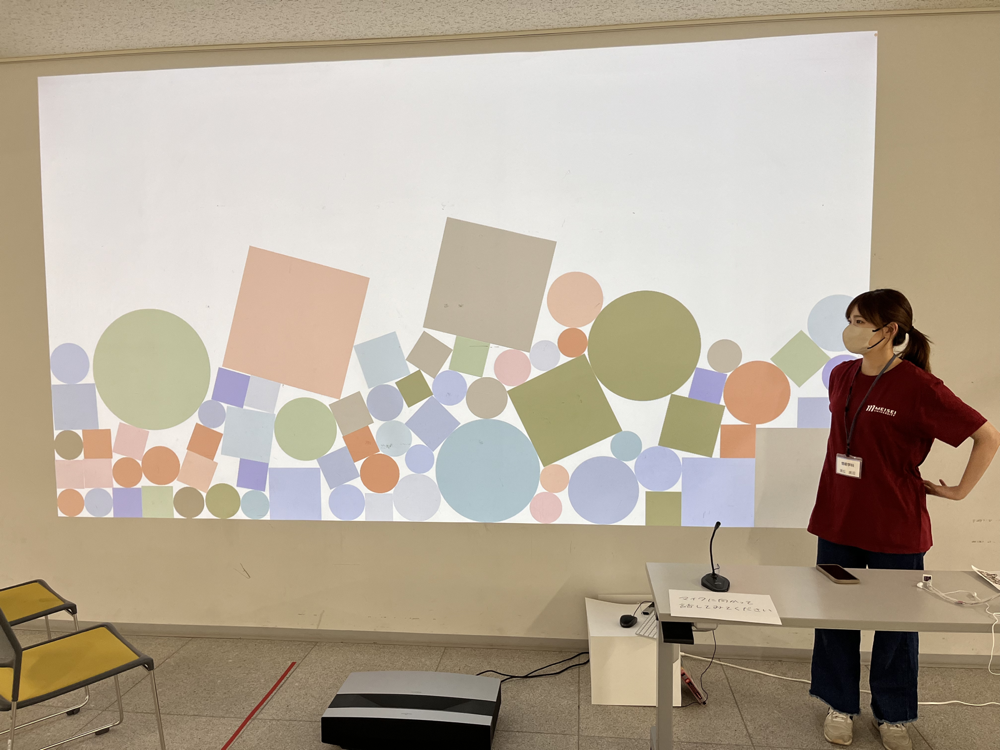

Sounds Drop

Technology
- Processing
- Projection
- Microphone
- BOX2D
Sounds Drop collects surrounding sounds through a microphone, drops them into a display, and lets them accumulate as visual shapes.
The size of each shape corresponds to the loudness of the surrounding sound.
Voices and other sounds disperse into a place like smoke from the moment they are produced. By dropping and layering those sounds visually, the work allows viewers to imagine recent events that may have occurred nearby.
A buildup of small shapes might suggest many passersby, while larger shapes might suggest an energetic conversation.
The work was created for Meisei University Open Campus and exhibited in the corridor on the third floor of Building 28.

